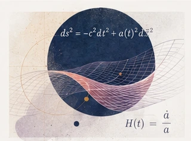
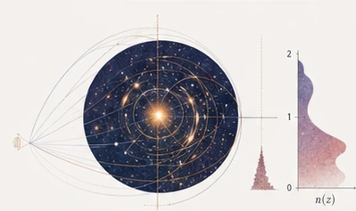
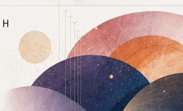
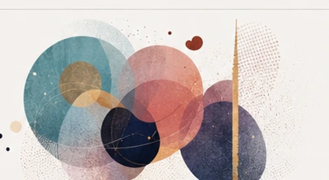

Matteo
Bianconi
Physicist / Teacher / Astrophysicist /
Science communicator
I explore physics through research, teaching and public engagement — from galaxies and gravitational lensing to the classroom.

Teaching
Physics education, classroom practice and making difficult ideas feel graspable.
Teaching overview ⟶

Research
Galaxies, clusters, gravitational lensing and the environments that shape them.
Research overview ⟶

Outreach
Astronomy and physics beyond the classroom through talks, events and public engagement.
Events & projects ⟶

Advocacy
Malan syndrome
Awareness, inclusion and supporting families through better understanding and community.
Learn more ⟶
